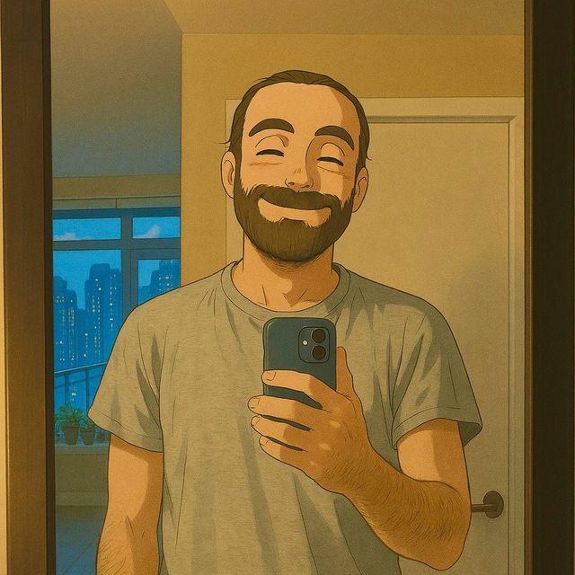

PhD Candidate · Generative Modeling · World Models · Reinforcement Learning · VLAs
I build learning systems that do more with less: generative models that learn well from limited data, sample-efficient reinforcement learning with world models, and fast, RL-fine-tuned vision-language-action (VLA) policies for robots. A recurring theme in my work is multimodal, sample-efficient generative modeling and using it to learn reliably from little experience.
I am a PhD candidate at Simon Fraser University (APEX Lab), advised by Ke Li, and affiliated with Amii. I expect to graduate in Fall 2026. Currently I am a Research Intern at RBC Borealis, where I work on improving the inference speed of multi-billion-parameter multimodal models for robotics. In parallel, I am developing a novel, sample-efficient approach to reinforcement learning fine-tuning of multi-billion-parameter vision-language-action (VLA) models. Before my PhD I spent three years shipping production software, including a verifiable voting system and end-to-end encrypted cloud storage.
I am on the job market for 2026 and always happy to chat about RL, generative modeling, or robot learning.

News
Publications
Experience
RBC Borealis — Research InternImproving the inference speed of multi-billion-parameter multimodal models for real-time robotics.
Simon Fraser University — PhD in Computer Science, APEX LabGenerative modeling and reinforcement learning with Ke Li; currently sample-efficient RL fine-tuning of large VLA models. Affiliated with the Alberta Machine Intelligence Institute (Amii).
Max Planck Institute for Informatics — Research InternImproved the preprocessing phase of the SPASS solver with Christoph Weidenbach; validated on competition-grade benchmarks.
Morvarid — Senior DeveloperProduction systems in Python, Java, Scala, and JavaScript: verifiable voting, encrypted cloud storage, and Ergo Pool blockchain infrastructure.
Isfahan University of Technology — B.Sc. in Computer EngineeringRanked 1st in class (GPA 18.29/20).
Awards
Service & Skills